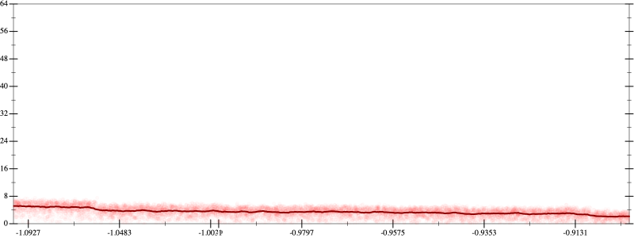
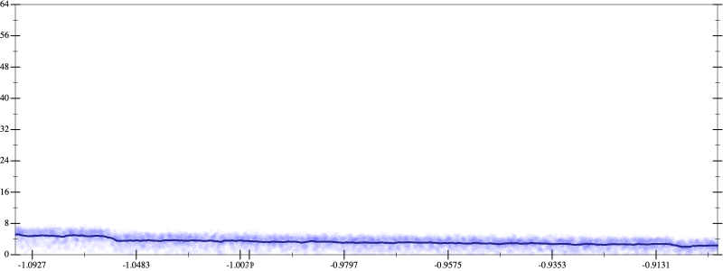
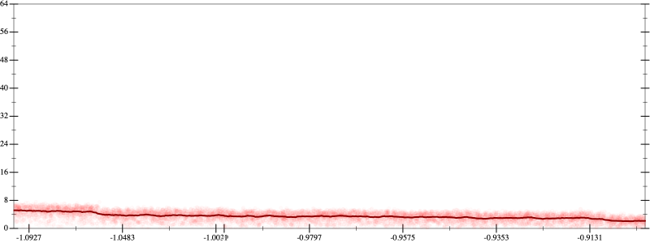
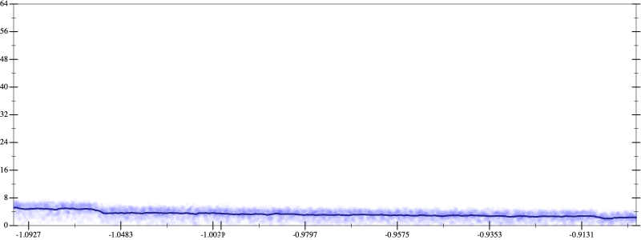

Initial program 3.5
\[\left(\left(\left(\left(\left(\left(-518918400.0 \cdot x + 2421619200.0 \cdot \left(\left(x \cdot x\right) \cdot x\right)\right) + -2905943040.0 \cdot \left(\left(\left(\left(x \cdot x\right) \cdot x\right) \cdot x\right) \cdot x\right)\right) + 1383782400.0 \cdot \left(\left(\left(\left(\left(\left(x \cdot x\right) \cdot x\right) \cdot x\right) \cdot x\right) \cdot x\right) \cdot x\right)\right) + -307507200.0 \cdot \left(\left(\left(\left(\left(\left(\left(\left(x \cdot x\right) \cdot x\right) \cdot x\right) \cdot x\right) \cdot x\right) \cdot x\right) \cdot x\right) \cdot x\right)\right) + 33546240.0 \cdot \left(\left(\left(\left(\left(\left(\left(\left(\left(\left(x \cdot x\right) \cdot x\right) \cdot x\right) \cdot x\right) \cdot x\right) \cdot x\right) \cdot x\right) \cdot x\right) \cdot x\right) \cdot x\right)\right) + -1720320.0 \cdot \left(\left(\left(\left(\left(\left(\left(\left(\left(\left(\left(\left(x \cdot x\right) \cdot x\right) \cdot x\right) \cdot x\right) \cdot x\right) \cdot x\right) \cdot x\right) \cdot x\right) \cdot x\right) \cdot x\right) \cdot x\right) \cdot x\right)\right) + 32768.0 \cdot \left(\left(\left(\left(\left(\left(\left(\left(\left(\left(\left(\left(\left(\left(x \cdot x\right) \cdot x\right) \cdot x\right) \cdot x\right) \cdot x\right) \cdot x\right) \cdot x\right) \cdot x\right) \cdot x\right) \cdot x\right) \cdot x\right) \cdot x\right) \cdot x\right) \cdot x\right)\]
Applied simplify3.6
\[\leadsto \color{blue}{\left(\left(\left(\left(x \cdot x\right) \cdot \left(x \cdot x\right)\right) \cdot \left({x}^{3} \cdot \left({x}^{3} \cdot {x}^{3}\right)\right)\right) \cdot \left(x \cdot \left(32768.0 \cdot x\right) + -1720320.0\right) + \left(\left(\left(\left(1383782400.0 \cdot x\right) \cdot \left(x \cdot x\right)\right) \cdot \left(\left(x \cdot x\right) \cdot \left(x \cdot x\right)\right) + -518918400.0 \cdot x\right) + \left(x \cdot x\right) \cdot \left(\left(x \cdot -2905943040.0\right) \cdot \left(x \cdot x\right) + 2421619200.0 \cdot x\right)\right)\right) + \left({x}^{3} \cdot \left({x}^{3} \cdot {x}^{3}\right)\right) \cdot \left(-307507200.0 + x \cdot \left(x \cdot 33546240.0\right)\right)}\]
- Using strategy
rm Applied flip-+3.6
\[\leadsto \left(\left(\left(\left(x \cdot x\right) \cdot \left(x \cdot x\right)\right) \cdot \left({x}^{3} \cdot \left({x}^{3} \cdot {x}^{3}\right)\right)\right) \cdot \left(x \cdot \left(32768.0 \cdot x\right) + -1720320.0\right) + \color{blue}{\frac{\left(\left(\left(1383782400.0 \cdot x\right) \cdot \left(x \cdot x\right)\right) \cdot \left(\left(x \cdot x\right) \cdot \left(x \cdot x\right)\right) + -518918400.0 \cdot x\right) \cdot \left(\left(\left(1383782400.0 \cdot x\right) \cdot \left(x \cdot x\right)\right) \cdot \left(\left(x \cdot x\right) \cdot \left(x \cdot x\right)\right) + -518918400.0 \cdot x\right) - \left(\left(x \cdot x\right) \cdot \left(\left(x \cdot -2905943040.0\right) \cdot \left(x \cdot x\right) + 2421619200.0 \cdot x\right)\right) \cdot \left(\left(x \cdot x\right) \cdot \left(\left(x \cdot -2905943040.0\right) \cdot \left(x \cdot x\right) + 2421619200.0 \cdot x\right)\right)}{\left(\left(\left(1383782400.0 \cdot x\right) \cdot \left(x \cdot x\right)\right) \cdot \left(\left(x \cdot x\right) \cdot \left(x \cdot x\right)\right) + -518918400.0 \cdot x\right) - \left(x \cdot x\right) \cdot \left(\left(x \cdot -2905943040.0\right) \cdot \left(x \cdot x\right) + 2421619200.0 \cdot x\right)}}\right) + \left({x}^{3} \cdot \left({x}^{3} \cdot {x}^{3}\right)\right) \cdot \left(-307507200.0 + x \cdot \left(x \cdot 33546240.0\right)\right)\]
Applied simplify3.3
\[\leadsto \left(\left(\left(\left(x \cdot x\right) \cdot \left(x \cdot x\right)\right) \cdot \left({x}^{3} \cdot \left({x}^{3} \cdot {x}^{3}\right)\right)\right) \cdot \left(x \cdot \left(32768.0 \cdot x\right) + -1720320.0\right) + \frac{\left(\left(\left(1383782400.0 \cdot x\right) \cdot \left(x \cdot x\right)\right) \cdot \left(\left(x \cdot x\right) \cdot \left(x \cdot x\right)\right) + -518918400.0 \cdot x\right) \cdot \left(\left(\left(1383782400.0 \cdot x\right) \cdot \left(x \cdot x\right)\right) \cdot \left(\left(x \cdot x\right) \cdot \left(x \cdot x\right)\right) + -518918400.0 \cdot x\right) - \left(\left(x \cdot x\right) \cdot \left(\left(x \cdot -2905943040.0\right) \cdot \left(x \cdot x\right) + 2421619200.0 \cdot x\right)\right) \cdot \left(\left(x \cdot x\right) \cdot \left(\left(x \cdot -2905943040.0\right) \cdot \left(x \cdot x\right) + 2421619200.0 \cdot x\right)\right)}{\color{blue}{\left(-518918400.0 \cdot x + \left(\left(x \cdot x\right) \cdot \left(x \cdot x\right)\right) \cdot \left(\left(1383782400.0 \cdot x\right) \cdot \left(x \cdot x\right)\right)\right) + \left(-2905943040.0 \cdot \left(x \cdot x\right) + 2421619200.0\right) \cdot \left(\left(-x\right) \cdot \left(x \cdot x\right)\right)}}\right) + \left({x}^{3} \cdot \left({x}^{3} \cdot {x}^{3}\right)\right) \cdot \left(-307507200.0 + x \cdot \left(x \cdot 33546240.0\right)\right)\]
- Using strategy
rm Applied add-cube-cbrt3.3
\[\leadsto \color{blue}{\left(\sqrt[3]{\left(\left(\left(\left(x \cdot x\right) \cdot \left(x \cdot x\right)\right) \cdot \left({x}^{3} \cdot \left({x}^{3} \cdot {x}^{3}\right)\right)\right) \cdot \left(x \cdot \left(32768.0 \cdot x\right) + -1720320.0\right) + \frac{\left(\left(\left(1383782400.0 \cdot x\right) \cdot \left(x \cdot x\right)\right) \cdot \left(\left(x \cdot x\right) \cdot \left(x \cdot x\right)\right) + -518918400.0 \cdot x\right) \cdot \left(\left(\left(1383782400.0 \cdot x\right) \cdot \left(x \cdot x\right)\right) \cdot \left(\left(x \cdot x\right) \cdot \left(x \cdot x\right)\right) + -518918400.0 \cdot x\right) - \left(\left(x \cdot x\right) \cdot \left(\left(x \cdot -2905943040.0\right) \cdot \left(x \cdot x\right) + 2421619200.0 \cdot x\right)\right) \cdot \left(\left(x \cdot x\right) \cdot \left(\left(x \cdot -2905943040.0\right) \cdot \left(x \cdot x\right) + 2421619200.0 \cdot x\right)\right)}{\left(-518918400.0 \cdot x + \left(\left(x \cdot x\right) \cdot \left(x \cdot x\right)\right) \cdot \left(\left(1383782400.0 \cdot x\right) \cdot \left(x \cdot x\right)\right)\right) + \left(-2905943040.0 \cdot \left(x \cdot x\right) + 2421619200.0\right) \cdot \left(\left(-x\right) \cdot \left(x \cdot x\right)\right)}\right) + \left({x}^{3} \cdot \left({x}^{3} \cdot {x}^{3}\right)\right) \cdot \left(-307507200.0 + x \cdot \left(x \cdot 33546240.0\right)\right)} \cdot \sqrt[3]{\left(\left(\left(\left(x \cdot x\right) \cdot \left(x \cdot x\right)\right) \cdot \left({x}^{3} \cdot \left({x}^{3} \cdot {x}^{3}\right)\right)\right) \cdot \left(x \cdot \left(32768.0 \cdot x\right) + -1720320.0\right) + \frac{\left(\left(\left(1383782400.0 \cdot x\right) \cdot \left(x \cdot x\right)\right) \cdot \left(\left(x \cdot x\right) \cdot \left(x \cdot x\right)\right) + -518918400.0 \cdot x\right) \cdot \left(\left(\left(1383782400.0 \cdot x\right) \cdot \left(x \cdot x\right)\right) \cdot \left(\left(x \cdot x\right) \cdot \left(x \cdot x\right)\right) + -518918400.0 \cdot x\right) - \left(\left(x \cdot x\right) \cdot \left(\left(x \cdot -2905943040.0\right) \cdot \left(x \cdot x\right) + 2421619200.0 \cdot x\right)\right) \cdot \left(\left(x \cdot x\right) \cdot \left(\left(x \cdot -2905943040.0\right) \cdot \left(x \cdot x\right) + 2421619200.0 \cdot x\right)\right)}{\left(-518918400.0 \cdot x + \left(\left(x \cdot x\right) \cdot \left(x \cdot x\right)\right) \cdot \left(\left(1383782400.0 \cdot x\right) \cdot \left(x \cdot x\right)\right)\right) + \left(-2905943040.0 \cdot \left(x \cdot x\right) + 2421619200.0\right) \cdot \left(\left(-x\right) \cdot \left(x \cdot x\right)\right)}\right) + \left({x}^{3} \cdot \left({x}^{3} \cdot {x}^{3}\right)\right) \cdot \left(-307507200.0 + x \cdot \left(x \cdot 33546240.0\right)\right)}\right) \cdot \sqrt[3]{\left(\left(\left(\left(x \cdot x\right) \cdot \left(x \cdot x\right)\right) \cdot \left({x}^{3} \cdot \left({x}^{3} \cdot {x}^{3}\right)\right)\right) \cdot \left(x \cdot \left(32768.0 \cdot x\right) + -1720320.0\right) + \frac{\left(\left(\left(1383782400.0 \cdot x\right) \cdot \left(x \cdot x\right)\right) \cdot \left(\left(x \cdot x\right) \cdot \left(x \cdot x\right)\right) + -518918400.0 \cdot x\right) \cdot \left(\left(\left(1383782400.0 \cdot x\right) \cdot \left(x \cdot x\right)\right) \cdot \left(\left(x \cdot x\right) \cdot \left(x \cdot x\right)\right) + -518918400.0 \cdot x\right) - \left(\left(x \cdot x\right) \cdot \left(\left(x \cdot -2905943040.0\right) \cdot \left(x \cdot x\right) + 2421619200.0 \cdot x\right)\right) \cdot \left(\left(x \cdot x\right) \cdot \left(\left(x \cdot -2905943040.0\right) \cdot \left(x \cdot x\right) + 2421619200.0 \cdot x\right)\right)}{\left(-518918400.0 \cdot x + \left(\left(x \cdot x\right) \cdot \left(x \cdot x\right)\right) \cdot \left(\left(1383782400.0 \cdot x\right) \cdot \left(x \cdot x\right)\right)\right) + \left(-2905943040.0 \cdot \left(x \cdot x\right) + 2421619200.0\right) \cdot \left(\left(-x\right) \cdot \left(x \cdot x\right)\right)}\right) + \left({x}^{3} \cdot \left({x}^{3} \cdot {x}^{3}\right)\right) \cdot \left(-307507200.0 + x \cdot \left(x \cdot 33546240.0\right)\right)}}\]
Applied simplify3.3
\[\leadsto \color{blue}{\left(\sqrt[3]{\frac{\left(\left(-518918400.0 \cdot x + \left(\left(x \cdot x\right) \cdot \left(1383782400.0 \cdot x\right)\right) \cdot \left(\left(x \cdot x\right) \cdot \left(x \cdot x\right)\right)\right) + \left(\left(x \cdot x\right) \cdot \left(x \cdot -2905943040.0\right) + x \cdot 2421619200.0\right) \cdot \left(x \cdot x\right)\right) \cdot \left(\left(-518918400.0 \cdot x + \left(\left(x \cdot x\right) \cdot \left(1383782400.0 \cdot x\right)\right) \cdot \left(\left(x \cdot x\right) \cdot \left(x \cdot x\right)\right)\right) - \left(\left(x \cdot x\right) \cdot \left(x \cdot -2905943040.0\right) + x \cdot 2421619200.0\right) \cdot \left(x \cdot x\right)\right)}{\left(-518918400.0 \cdot x + \left(\left(x \cdot x\right) \cdot \left(1383782400.0 \cdot x\right)\right) \cdot \left(\left(x \cdot x\right) \cdot \left(x \cdot x\right)\right)\right) + \left(\left(-x\right) \cdot \left(x \cdot x\right)\right) \cdot \left(-2905943040.0 \cdot \left(x \cdot x\right) + 2421619200.0\right)} + \left(\left(-1720320.0 + \left(x \cdot 32768.0\right) \cdot x\right) \cdot \left(\left(\left(x \cdot x\right) \cdot \left(x \cdot x\right)\right) \cdot {\left({x}^{3}\right)}^{3}\right) + \left(x \cdot \left(33546240.0 \cdot x\right) + -307507200.0\right) \cdot {\left({x}^{3}\right)}^{3}\right)} \cdot \sqrt[3]{\frac{\left(\left(-518918400.0 \cdot x + \left(\left(x \cdot x\right) \cdot \left(1383782400.0 \cdot x\right)\right) \cdot \left(\left(x \cdot x\right) \cdot \left(x \cdot x\right)\right)\right) + \left(\left(x \cdot x\right) \cdot \left(x \cdot -2905943040.0\right) + x \cdot 2421619200.0\right) \cdot \left(x \cdot x\right)\right) \cdot \left(\left(-518918400.0 \cdot x + \left(\left(x \cdot x\right) \cdot \left(1383782400.0 \cdot x\right)\right) \cdot \left(\left(x \cdot x\right) \cdot \left(x \cdot x\right)\right)\right) - \left(\left(x \cdot x\right) \cdot \left(x \cdot -2905943040.0\right) + x \cdot 2421619200.0\right) \cdot \left(x \cdot x\right)\right)}{\left(-518918400.0 \cdot x + \left(\left(x \cdot x\right) \cdot \left(1383782400.0 \cdot x\right)\right) \cdot \left(\left(x \cdot x\right) \cdot \left(x \cdot x\right)\right)\right) + \left(\left(-x\right) \cdot \left(x \cdot x\right)\right) \cdot \left(-2905943040.0 \cdot \left(x \cdot x\right) + 2421619200.0\right)} + \left(\left(-1720320.0 + \left(x \cdot 32768.0\right) \cdot x\right) \cdot \left(\left(\left(x \cdot x\right) \cdot \left(x \cdot x\right)\right) \cdot {\left({x}^{3}\right)}^{3}\right) + \left(x \cdot \left(33546240.0 \cdot x\right) + -307507200.0\right) \cdot {\left({x}^{3}\right)}^{3}\right)}\right)} \cdot \sqrt[3]{\left(\left(\left(\left(x \cdot x\right) \cdot \left(x \cdot x\right)\right) \cdot \left({x}^{3} \cdot \left({x}^{3} \cdot {x}^{3}\right)\right)\right) \cdot \left(x \cdot \left(32768.0 \cdot x\right) + -1720320.0\right) + \frac{\left(\left(\left(1383782400.0 \cdot x\right) \cdot \left(x \cdot x\right)\right) \cdot \left(\left(x \cdot x\right) \cdot \left(x \cdot x\right)\right) + -518918400.0 \cdot x\right) \cdot \left(\left(\left(1383782400.0 \cdot x\right) \cdot \left(x \cdot x\right)\right) \cdot \left(\left(x \cdot x\right) \cdot \left(x \cdot x\right)\right) + -518918400.0 \cdot x\right) - \left(\left(x \cdot x\right) \cdot \left(\left(x \cdot -2905943040.0\right) \cdot \left(x \cdot x\right) + 2421619200.0 \cdot x\right)\right) \cdot \left(\left(x \cdot x\right) \cdot \left(\left(x \cdot -2905943040.0\right) \cdot \left(x \cdot x\right) + 2421619200.0 \cdot x\right)\right)}{\left(-518918400.0 \cdot x + \left(\left(x \cdot x\right) \cdot \left(x \cdot x\right)\right) \cdot \left(\left(1383782400.0 \cdot x\right) \cdot \left(x \cdot x\right)\right)\right) + \left(-2905943040.0 \cdot \left(x \cdot x\right) + 2421619200.0\right) \cdot \left(\left(-x\right) \cdot \left(x \cdot x\right)\right)}\right) + \left({x}^{3} \cdot \left({x}^{3} \cdot {x}^{3}\right)\right) \cdot \left(-307507200.0 + x \cdot \left(x \cdot 33546240.0\right)\right)}\]
Applied simplify3.3
\[\leadsto \left(\sqrt[3]{\frac{\left(\left(-518918400.0 \cdot x + \left(\left(x \cdot x\right) \cdot \left(1383782400.0 \cdot x\right)\right) \cdot \left(\left(x \cdot x\right) \cdot \left(x \cdot x\right)\right)\right) + \left(\left(x \cdot x\right) \cdot \left(x \cdot -2905943040.0\right) + x \cdot 2421619200.0\right) \cdot \left(x \cdot x\right)\right) \cdot \left(\left(-518918400.0 \cdot x + \left(\left(x \cdot x\right) \cdot \left(1383782400.0 \cdot x\right)\right) \cdot \left(\left(x \cdot x\right) \cdot \left(x \cdot x\right)\right)\right) - \left(\left(x \cdot x\right) \cdot \left(x \cdot -2905943040.0\right) + x \cdot 2421619200.0\right) \cdot \left(x \cdot x\right)\right)}{\left(-518918400.0 \cdot x + \left(\left(x \cdot x\right) \cdot \left(1383782400.0 \cdot x\right)\right) \cdot \left(\left(x \cdot x\right) \cdot \left(x \cdot x\right)\right)\right) + \left(\left(-x\right) \cdot \left(x \cdot x\right)\right) \cdot \left(-2905943040.0 \cdot \left(x \cdot x\right) + 2421619200.0\right)} + \left(\left(-1720320.0 + \left(x \cdot 32768.0\right) \cdot x\right) \cdot \left(\left(\left(x \cdot x\right) \cdot \left(x \cdot x\right)\right) \cdot {\left({x}^{3}\right)}^{3}\right) + \left(x \cdot \left(33546240.0 \cdot x\right) + -307507200.0\right) \cdot {\left({x}^{3}\right)}^{3}\right)} \cdot \sqrt[3]{\frac{\left(\left(-518918400.0 \cdot x + \left(\left(x \cdot x\right) \cdot \left(1383782400.0 \cdot x\right)\right) \cdot \left(\left(x \cdot x\right) \cdot \left(x \cdot x\right)\right)\right) + \left(\left(x \cdot x\right) \cdot \left(x \cdot -2905943040.0\right) + x \cdot 2421619200.0\right) \cdot \left(x \cdot x\right)\right) \cdot \left(\left(-518918400.0 \cdot x + \left(\left(x \cdot x\right) \cdot \left(1383782400.0 \cdot x\right)\right) \cdot \left(\left(x \cdot x\right) \cdot \left(x \cdot x\right)\right)\right) - \left(\left(x \cdot x\right) \cdot \left(x \cdot -2905943040.0\right) + x \cdot 2421619200.0\right) \cdot \left(x \cdot x\right)\right)}{\left(-518918400.0 \cdot x + \left(\left(x \cdot x\right) \cdot \left(1383782400.0 \cdot x\right)\right) \cdot \left(\left(x \cdot x\right) \cdot \left(x \cdot x\right)\right)\right) + \left(\left(-x\right) \cdot \left(x \cdot x\right)\right) \cdot \left(-2905943040.0 \cdot \left(x \cdot x\right) + 2421619200.0\right)} + \left(\left(-1720320.0 + \left(x \cdot 32768.0\right) \cdot x\right) \cdot \left(\left(\left(x \cdot x\right) \cdot \left(x \cdot x\right)\right) \cdot {\left({x}^{3}\right)}^{3}\right) + \left(x \cdot \left(33546240.0 \cdot x\right) + -307507200.0\right) \cdot {\left({x}^{3}\right)}^{3}\right)}\right) \cdot \color{blue}{\sqrt[3]{\frac{\left(\left(-518918400.0 \cdot x + \left(\left(x \cdot x\right) \cdot \left(1383782400.0 \cdot x\right)\right) \cdot \left(\left(x \cdot x\right) \cdot \left(x \cdot x\right)\right)\right) - \left(\left(x \cdot x\right) \cdot \left(x \cdot -2905943040.0\right) + x \cdot 2421619200.0\right) \cdot \left(x \cdot x\right)\right) \cdot \left(\left(-518918400.0 \cdot x + \left(\left(x \cdot x\right) \cdot \left(1383782400.0 \cdot x\right)\right) \cdot \left(\left(x \cdot x\right) \cdot \left(x \cdot x\right)\right)\right) + \left(\left(x \cdot x\right) \cdot \left(x \cdot -2905943040.0\right) + x \cdot 2421619200.0\right) \cdot \left(x \cdot x\right)\right)}{\left(-518918400.0 \cdot x + \left(\left(x \cdot x\right) \cdot \left(1383782400.0 \cdot x\right)\right) \cdot \left(\left(x \cdot x\right) \cdot \left(x \cdot x\right)\right)\right) + \left(\left(-x\right) \cdot \left(x \cdot x\right)\right) \cdot \left(-2905943040.0 \cdot \left(x \cdot x\right) + 2421619200.0\right)} + \left(\left(-1720320.0 + \left(x \cdot 32768.0\right) \cdot x\right) \cdot \left(\left(\left(x \cdot x\right) \cdot \left(x \cdot x\right)\right) \cdot {\left({x}^{3}\right)}^{3}\right) + \left(x \cdot \left(33546240.0 \cdot x\right) + -307507200.0\right) \cdot {\left({x}^{3}\right)}^{3}\right)}}\]
- Using strategy
rm Applied flip-+3.3
\[\leadsto \left(\sqrt[3]{\frac{\left(\left(-518918400.0 \cdot x + \left(\left(x \cdot x\right) \cdot \left(1383782400.0 \cdot x\right)\right) \cdot \left(\left(x \cdot x\right) \cdot \left(x \cdot x\right)\right)\right) + \left(\left(x \cdot x\right) \cdot \left(x \cdot -2905943040.0\right) + x \cdot 2421619200.0\right) \cdot \left(x \cdot x\right)\right) \cdot \left(\left(-518918400.0 \cdot x + \left(\left(x \cdot x\right) \cdot \left(1383782400.0 \cdot x\right)\right) \cdot \left(\left(x \cdot x\right) \cdot \left(x \cdot x\right)\right)\right) - \left(\left(x \cdot x\right) \cdot \left(x \cdot -2905943040.0\right) + x \cdot 2421619200.0\right) \cdot \left(x \cdot x\right)\right)}{\left(-518918400.0 \cdot x + \left(\left(x \cdot x\right) \cdot \left(1383782400.0 \cdot x\right)\right) \cdot \left(\left(x \cdot x\right) \cdot \left(x \cdot x\right)\right)\right) + \left(\left(-x\right) \cdot \left(x \cdot x\right)\right) \cdot \left(-2905943040.0 \cdot \left(x \cdot x\right) + 2421619200.0\right)} + \left(\left(-1720320.0 + \left(x \cdot 32768.0\right) \cdot x\right) \cdot \left(\left(\left(x \cdot x\right) \cdot \left(x \cdot x\right)\right) \cdot {\left({x}^{3}\right)}^{3}\right) + \left(x \cdot \left(33546240.0 \cdot x\right) + -307507200.0\right) \cdot {\left({x}^{3}\right)}^{3}\right)} \cdot \sqrt[3]{\frac{\left(\left(-518918400.0 \cdot x + \left(\left(x \cdot x\right) \cdot \left(1383782400.0 \cdot x\right)\right) \cdot \left(\left(x \cdot x\right) \cdot \left(x \cdot x\right)\right)\right) + \left(\left(x \cdot x\right) \cdot \left(x \cdot -2905943040.0\right) + x \cdot 2421619200.0\right) \cdot \left(x \cdot x\right)\right) \cdot \left(\left(-518918400.0 \cdot x + \left(\left(x \cdot x\right) \cdot \left(1383782400.0 \cdot x\right)\right) \cdot \left(\left(x \cdot x\right) \cdot \left(x \cdot x\right)\right)\right) - \left(\left(x \cdot x\right) \cdot \left(x \cdot -2905943040.0\right) + x \cdot 2421619200.0\right) \cdot \left(x \cdot x\right)\right)}{\left(-518918400.0 \cdot x + \left(\left(x \cdot x\right) \cdot \left(1383782400.0 \cdot x\right)\right) \cdot \left(\left(x \cdot x\right) \cdot \left(x \cdot x\right)\right)\right) + \left(\left(-x\right) \cdot \left(x \cdot x\right)\right) \cdot \left(-2905943040.0 \cdot \left(x \cdot x\right) + 2421619200.0\right)} + \left(\left(-1720320.0 + \left(x \cdot 32768.0\right) \cdot x\right) \cdot \left(\left(\left(x \cdot x\right) \cdot \left(x \cdot x\right)\right) \cdot {\left({x}^{3}\right)}^{3}\right) + \left(x \cdot \left(33546240.0 \cdot x\right) + -307507200.0\right) \cdot {\left({x}^{3}\right)}^{3}\right)}\right) \cdot \sqrt[3]{\frac{\left(\left(-518918400.0 \cdot x + \left(\left(x \cdot x\right) \cdot \left(1383782400.0 \cdot x\right)\right) \cdot \left(\left(x \cdot x\right) \cdot \left(x \cdot x\right)\right)\right) - \color{blue}{\frac{\left(\left(x \cdot x\right) \cdot \left(x \cdot -2905943040.0\right)\right) \cdot \left(\left(x \cdot x\right) \cdot \left(x \cdot -2905943040.0\right)\right) - \left(x \cdot 2421619200.0\right) \cdot \left(x \cdot 2421619200.0\right)}{\left(x \cdot x\right) \cdot \left(x \cdot -2905943040.0\right) - x \cdot 2421619200.0}} \cdot \left(x \cdot x\right)\right) \cdot \left(\left(-518918400.0 \cdot x + \left(\left(x \cdot x\right) \cdot \left(1383782400.0 \cdot x\right)\right) \cdot \left(\left(x \cdot x\right) \cdot \left(x \cdot x\right)\right)\right) + \left(\left(x \cdot x\right) \cdot \left(x \cdot -2905943040.0\right) + x \cdot 2421619200.0\right) \cdot \left(x \cdot x\right)\right)}{\left(-518918400.0 \cdot x + \left(\left(x \cdot x\right) \cdot \left(1383782400.0 \cdot x\right)\right) \cdot \left(\left(x \cdot x\right) \cdot \left(x \cdot x\right)\right)\right) + \left(\left(-x\right) \cdot \left(x \cdot x\right)\right) \cdot \left(-2905943040.0 \cdot \left(x \cdot x\right) + 2421619200.0\right)} + \left(\left(-1720320.0 + \left(x \cdot 32768.0\right) \cdot x\right) \cdot \left(\left(\left(x \cdot x\right) \cdot \left(x \cdot x\right)\right) \cdot {\left({x}^{3}\right)}^{3}\right) + \left(x \cdot \left(33546240.0 \cdot x\right) + -307507200.0\right) \cdot {\left({x}^{3}\right)}^{3}\right)}\]
- Using strategy
rm Applied flip-+3.3
\[\leadsto \left(\sqrt[3]{\frac{\left(\left(-518918400.0 \cdot x + \left(\left(x \cdot x\right) \cdot \left(1383782400.0 \cdot x\right)\right) \cdot \left(\left(x \cdot x\right) \cdot \left(x \cdot x\right)\right)\right) + \left(\left(x \cdot x\right) \cdot \left(x \cdot -2905943040.0\right) + x \cdot 2421619200.0\right) \cdot \left(x \cdot x\right)\right) \cdot \left(\left(-518918400.0 \cdot x + \left(\left(x \cdot x\right) \cdot \left(1383782400.0 \cdot x\right)\right) \cdot \left(\left(x \cdot x\right) \cdot \left(x \cdot x\right)\right)\right) - \left(\left(x \cdot x\right) \cdot \left(x \cdot -2905943040.0\right) + x \cdot 2421619200.0\right) \cdot \left(x \cdot x\right)\right)}{\left(-518918400.0 \cdot x + \left(\left(x \cdot x\right) \cdot \left(1383782400.0 \cdot x\right)\right) \cdot \left(\left(x \cdot x\right) \cdot \left(x \cdot x\right)\right)\right) + \left(\left(-x\right) \cdot \left(x \cdot x\right)\right) \cdot \left(-2905943040.0 \cdot \left(x \cdot x\right) + 2421619200.0\right)} + \left(\left(-1720320.0 + \left(x \cdot 32768.0\right) \cdot x\right) \cdot \left(\left(\left(x \cdot x\right) \cdot \left(x \cdot x\right)\right) \cdot {\left({x}^{3}\right)}^{3}\right) + \left(x \cdot \left(33546240.0 \cdot x\right) + -307507200.0\right) \cdot {\left({x}^{3}\right)}^{3}\right)} \cdot \sqrt[3]{\frac{\left(\left(-518918400.0 \cdot x + \left(\left(x \cdot x\right) \cdot \left(1383782400.0 \cdot x\right)\right) \cdot \left(\left(x \cdot x\right) \cdot \left(x \cdot x\right)\right)\right) + \left(\left(x \cdot x\right) \cdot \left(x \cdot -2905943040.0\right) + x \cdot 2421619200.0\right) \cdot \left(x \cdot x\right)\right) \cdot \left(\left(-518918400.0 \cdot x + \left(\left(x \cdot x\right) \cdot \left(1383782400.0 \cdot x\right)\right) \cdot \left(\left(x \cdot x\right) \cdot \left(x \cdot x\right)\right)\right) - \color{blue}{\frac{\left(\left(x \cdot x\right) \cdot \left(x \cdot -2905943040.0\right)\right) \cdot \left(\left(x \cdot x\right) \cdot \left(x \cdot -2905943040.0\right)\right) - \left(x \cdot 2421619200.0\right) \cdot \left(x \cdot 2421619200.0\right)}{\left(x \cdot x\right) \cdot \left(x \cdot -2905943040.0\right) - x \cdot 2421619200.0}} \cdot \left(x \cdot x\right)\right)}{\left(-518918400.0 \cdot x + \left(\left(x \cdot x\right) \cdot \left(1383782400.0 \cdot x\right)\right) \cdot \left(\left(x \cdot x\right) \cdot \left(x \cdot x\right)\right)\right) + \left(\left(-x\right) \cdot \left(x \cdot x\right)\right) \cdot \left(-2905943040.0 \cdot \left(x \cdot x\right) + 2421619200.0\right)} + \left(\left(-1720320.0 + \left(x \cdot 32768.0\right) \cdot x\right) \cdot \left(\left(\left(x \cdot x\right) \cdot \left(x \cdot x\right)\right) \cdot {\left({x}^{3}\right)}^{3}\right) + \left(x \cdot \left(33546240.0 \cdot x\right) + -307507200.0\right) \cdot {\left({x}^{3}\right)}^{3}\right)}\right) \cdot \sqrt[3]{\frac{\left(\left(-518918400.0 \cdot x + \left(\left(x \cdot x\right) \cdot \left(1383782400.0 \cdot x\right)\right) \cdot \left(\left(x \cdot x\right) \cdot \left(x \cdot x\right)\right)\right) - \frac{\left(\left(x \cdot x\right) \cdot \left(x \cdot -2905943040.0\right)\right) \cdot \left(\left(x \cdot x\right) \cdot \left(x \cdot -2905943040.0\right)\right) - \left(x \cdot 2421619200.0\right) \cdot \left(x \cdot 2421619200.0\right)}{\left(x \cdot x\right) \cdot \left(x \cdot -2905943040.0\right) - x \cdot 2421619200.0} \cdot \left(x \cdot x\right)\right) \cdot \left(\left(-518918400.0 \cdot x + \left(\left(x \cdot x\right) \cdot \left(1383782400.0 \cdot x\right)\right) \cdot \left(\left(x \cdot x\right) \cdot \left(x \cdot x\right)\right)\right) + \left(\left(x \cdot x\right) \cdot \left(x \cdot -2905943040.0\right) + x \cdot 2421619200.0\right) \cdot \left(x \cdot x\right)\right)}{\left(-518918400.0 \cdot x + \left(\left(x \cdot x\right) \cdot \left(1383782400.0 \cdot x\right)\right) \cdot \left(\left(x \cdot x\right) \cdot \left(x \cdot x\right)\right)\right) + \left(\left(-x\right) \cdot \left(x \cdot x\right)\right) \cdot \left(-2905943040.0 \cdot \left(x \cdot x\right) + 2421619200.0\right)} + \left(\left(-1720320.0 + \left(x \cdot 32768.0\right) \cdot x\right) \cdot \left(\left(\left(x \cdot x\right) \cdot \left(x \cdot x\right)\right) \cdot {\left({x}^{3}\right)}^{3}\right) + \left(x \cdot \left(33546240.0 \cdot x\right) + -307507200.0\right) \cdot {\left({x}^{3}\right)}^{3}\right)}\]
 
